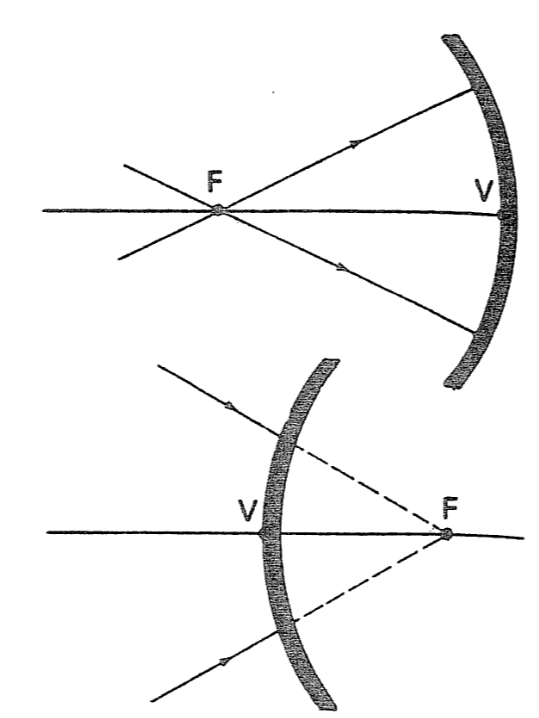
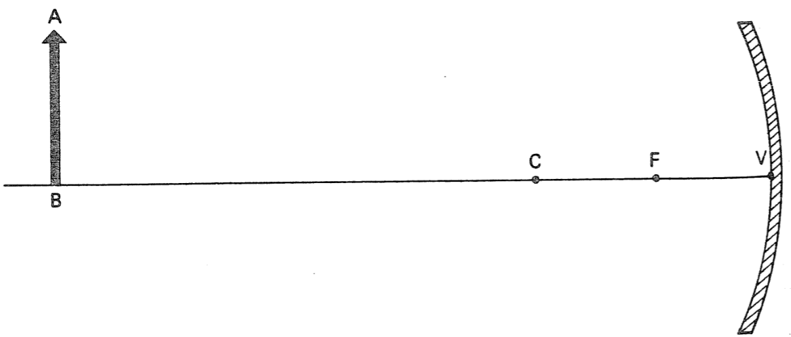

Preguntas conceptuales
Considere los espejos esféricos que se muestran en la figura de este ejercicio. Los puntos F y V indican, respectivamente, el foco y el vértice de cada espejo. Trace en la figura los rayos reflejados que corresponden a cada uno de los rayos incidentes que se muestran.

Orientándose por los ejemplos resueltos en esta sección, haga un diagrama para localizar la imagen del objeto AB colocado frente a un espejo cóncavo, en la posición que se muestra en la figura de este ejercicio.

Acerque al espejo el objeto AB de la cuestión anterior, y colóquelo entre el centro y el foco. Haga un nuevo diagrama para localizar la imagen del objeto en esta nueva posición.
Para resolver este ejercicio, observe los diagramas que trazó en el ejercicio anterior. Cuando aproximamos al foco de un espejo cóncavo un objeto que se hallaba alejado del mismo, la imagen de dicho objeto:
¿Permanece siempre real?
¿Se aleja del espejo, se aproxima a él o queda en la misma posición?
¿Aumenta, disminuye o permanece del mismo tamaño?
¿Es siempre invertida en relación con el objeto?
Suponga que el objeto AB del Ejercicio 27 se coloca en el foco F del espejo. En estas condiciones no se formará una imagen del objeto. ¿Por qué?
Considerando de nuevo el objeto AB del Ejercicio 27, suponga ahora que se coloca entre el foco y el vértice del espejo. Trace un diagrama para localizar la imagen del objeto en esta situación y responda:
¿La imagen obtenida es real o virtual?
¿Es mayor, menor o del mismo tamaño que el objeto?
¿Es derecha o invertida?
Localice la figura de esta sección, cuyo diagrama corresponde al caso de este ejercicio.
Ejercicios
Suponga que en la figura del Ejercicio 2 la distancia focal del espejo cóncavo es f = 10 cm, y que el objeto se encuentra situado a una distancia Do = 60 cm del vértice del espejo.
Mediante la ecuación de los espejos esféricos determine la distancia Di de la imagen al espejo.
Teniendo en cuenta el resultado obtenido en la pregunta anterior, ¿concluye usted que la imagen es real o virtual?
Calcule el aumento proporcionado por el espejo. ¿Qué significa este resultado?
Los resultados que obtuvo en este ejercicio, ¿concuerdan con el diagrama trazado en el Ejercicio 27a?
Responda a las preguntas (a), (b) y (c) del ejercicio anterior, suponiendo ahora que el objeto se colocó a la distancia Do = 15 cm del vértice del mismo espejo. Verifique si sus respuestas concuerdan cualitativamente con el diagrama que trazó en el Ejercicio 27b.
Frente a un espejo cóncavo de distancia focal f, se coloca un objeto exactamente en el centro de curvatura, C, del espejo (es decir, Do = 2f).
Usando la ecuación de los espejos esféricos, determine el valor de Di en función de f.
Entonces, ¿en qué posición se localiza la imagen?
¿La imagen es real o virtual?
¿Cuál es, en este caso el valor del aumento? ¿qué significa este resultado?
Trace el diagrama para obtener la imagen en la situación que se menciona en el ejercicio anterior, y compruebe si concuerda con las respuestas que obtuvo.
¿La imagen obtenida es derecha o invertida?
Un objeto se sitúa a una distancia de 36 cm del vértice de un espejo convexo, cuya distancia focal vale 12 cm.
Usando la ecuación de los espejos esféricos (recuerde la convención de signos), determine Di.
Tomando en cuenta el resultado de la pregunta anterior, ¿concluye usted que la imagen es real o virtual?
Calcule el aumento proporcionado por el espejo.
Entonces, si el tamaño del objeto es AB = 4 cm, ¿cuál es el tamaño, A′B′, de la imagen?
Trace el diagrama de formación de la imagen en la situación correspondiente al ejercicio anterior. Vea si concuerda con los resultados que obtuvo.
Las afirmaciones siguientes se refieren a un espejo cóncavo, cuyo radio de curvatura es de 30 cm. Señale la que está equivocada.
Un objeto pequeño, situado a 20 m del espejo, tendrá su imagen formada prácticamente en el foco.
Los rayos luminosos que inciden en el espejo y pasan por el centro de curvatura, se reflejan paralelamente a su eje.
La imagen de un objeto situado a 10 cm del espejo, será virtual.
Un rayo incidente y el respectivo rayo reflejado, forman ángulos iguales con la recta que une el punto de incidencia con el centro de curvatura.
La imagen de un objeto, situado a 35 cm del espejo, será real.
Considere los siguientes datos referentes a un objeto y a su imagen proporcionada por cierto espejo:
distancia del objeto al espejo, 6 cm.
aumento, 5.
imagen, invertida.
Con base en esta información diga cuáles de las afirmaciones siguientes, son correctas.
La imagen del objeto es virtual.
La imagen está situada a 30 cm del espejo.
La distancia focal del espejo vale 2.5 cm.
El espejo es cóncavo.
El radio de curvatura del espejo vale 5 cm.
Considere los siguientes datos relacionados con un objeto y su imagen proporcionada por un espejo dado:
valor de la distancia focal del espejo, 20 cm.
aumento, 0.10.
imagen, derecha.
Con base en esta información señale cuáles de las afirmaciones siguientes son correctas.
La imagen del objeto es virtual.
El espejo es convexo.
La imagen está situada a 18 cm del espejo.
El objeto está situado a 1.8 cm del espejo.
El radio de curvatura del espejo vale 10 cm.
Un objeto se desplaza, con velocidad constante, a lo largo del eje de un espejo cóncavo. Para cada uno de los trechos siguientes, recorridos por el objeto, indique si la velocidad media de la imagen es mayor, menor o igual a la velocidad del objeto.
El objeto se desplaza desde el infinito hasta el centro del espejo.
El objeto se desplaza desde el centro al foco del espejo.
El objeto se desplaza desde el foco al vértice del espejo.